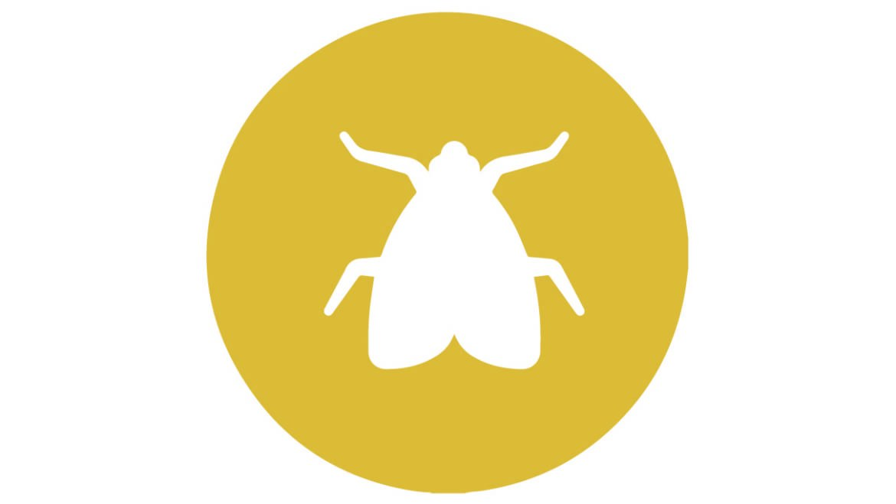

MUĞLA DELTA İLAÇLAMA
Karasinekler
Muğla Delta İlaçlama

Karasinek
Karasinek ( Musca domestica ), İki kanatlılar (Diptera) takımının Muscidae familyasından böcek türü.
Uzunluğu 5-8 mm arasında değişen, rengi genel olarak koyu gri ve siyah olan ve uçabilen bir sinek türü.
Yerleşim bölgelerindeki bütün sineklerin % 90’ını meydana getirir. Kutuplar’dan Ekvator’a doğudan batıya yayılmış durumdadır. Karasinek insanların yaşadığı en soğuk iklimden en sıcak iklime kadar bütün meskûn yerlerde bulunabilir.
Karasinek, bütün uçucu böcekler içinde, arka kanatlarının değişimiyle oluşan halter denen denge organı sayesinde, en üstün uçma kabiliyetine sahip usta bir “hava akrobatı”dır.
Her türlü gıda ve çöp artıklarıyla beslenirler ve ortalama 3 km uçarak çevrede insanların yaşadığı her yeri istila ederler ve vucutlarında çok çeşitli hastalık mikropları taşıdığı için her dolaştığı şeye mikrobu bulaştırırlar. Zira her 5 dakikada bir gezdiği yerlere dışkı bırakırlar. Kolera, diyare, dizanteri, hepatit, çocuk felci, gıda zehirlenmeleri, salmonelloz, verem gibi hastalıkları bulaştırır.
Dış iskelet
A: baş; B: göğüs; C: karın; 1: bileşik göz; 2: kılçık; 3: duyarga; 4: maxilary palps; 5: alt dudak; 6: pseudotracheae; 7: dudakçık; 8: prescutum; 9: anterior spiracle; 10: scutum; 11: mesopleuron; 12: calypters; 13: scutellum; 14: kanat; 15: karın segmenti; 16: haltere; 17: posterior spiracle; 18: uyluk; 19: kaval kemiği; 20: mahmuz; 21: ayak bileği
Bütün böceklerde olduğu gibi, bir iç iskelet sistemine sahip olmayan karasineğe bunun yerine muazzam mekanik avantajlar sağlayan kitinden yapılmış bir dış iskeletleri bulunmaktaddır. Bu sert kabuk, sineğin, kanatları saniyede 200 defa çırpmasını sağlar. Kanatların yüzeyinde ve başının arka kısmında bulunan hassas duyu organları olan antenleriyle uçuşla ilgili mesajları anında beyne nakleder. Mesela, sinek, uçuş esnasında yeni, farklı bir hava akımına maruz kalırsa, bu duyu organları hemen beyne gerekli sinyalleri iletirler. Kaslar da beyinden gelen bu sinyallere göre kanatlan, yeni duruma uygun harekete geçirir. Bu sistem, günümüzün modern uçaklarına ilham kaynağı olmakta şimşek gibi hızlı manevralarla, kendisini yakalamak isteyenleri çileden çıkaran sineği vurmak için kullandığımız sineklik ile çok defa ıskalamamızın sebebi, bu harikulade duyu organlarıdır. Sinek bunlarla, sinekliğin havada meydana getirdiği yeni hava akımını hemen algılar ve bu durumun bir tehlike oluşturduğunu anlayarak, ani bir hareketle uçup, kurtulur. Reflekslerinin, yani ani hareket kabiliyetinin, insandan 10 kat fazla olduğu kabul edilir.
Üreme
1: dudakçık; 2: alt dudak; 3: dokungaç; 4: üst dudak; 5: subgenal alanı; 6: clypeus; 7: fronto-orbital alan; 8: ön yörünge kıllar; 9: dış dikey kıl; 10: iç dikey kıl; 11: postocellar kıllar; 12: ocelli; 13: ocellar kıllar; 14: birleşik göz; 15: frontal ya da ptilinal sutur; 16: duyarga; 17: kılçık; 18: burun kılı
Karasinekler yumurtalarını dışkılara, çöplüklere, özellikle sıcak ve nemli yerlere bırakırlar. Yumurtalar bir günden kısa bir sürede çatlar ve larvalar çıkar. Larvalar bir iki hafta içinde pupa evresine girerler. Pupa evresinde başkalaşmaya uğrayarak birkaç günde kanatlı erişkin biçimlerini alırlar.
Çöp ve gübre gibi nemli organik madde bulunan yerlere 100-150 tanesi yığın halinde yumurtalarını bırakır. Çıkan larvalar organik maddelerle beslenir ve sıcak havada ortalama 7-8 günde sinek olarak uçar. Çok çabuk ürerler.
Karasinek, kısa ama yoğun ve üretimli bir hayat sürer. Eğer yumurtaları 25 derece sıcaklıktaki nemli bir yere bırakılırsa yumurtalar, 10 saat gibi kısa bir zaman zarfında açılırlar. Kurtçuklar ancak sıvı maddelerle beslenirler. Bunlar katı yiyecekleri sıvı hale dönüştürebilmek için kendileriyle ortak yaşayan bakterilere muhtaçtır. Bunlarla beraber nimf (pupa) haline girmek üzere olan kurtçuk, orta bağırsağın son kısmından, sindirim borusu boyunca yol alan bakterilerin çoğunu yok edebilecek bir asit salgılar. Kalan bakterileri de tam nimf kundağından çıkarken orada bırakır ve sinek böylece tam asepsili (mikroptan arınmış) olarak dünyaya gelir. Metamorfoz (başkalaşım) geçirip, erişkin sinek haline gelebilmeleri için ise lüzumlu olan 40 °C sıcaklıktaki mekânlara yönlendirilirler. Bu ortamda 6 gün içinde iki metamorfoz geçirip, erişkin sinek olurlar. Bir defada yaklaşık olarak 100’ün üstünde, hayatı boyunca da 600-1000 yumurta bırakabilen dişi karasinek, larva döneminden sonraki üç gün içerisinde, çok rahatlıkla yeniden yumurta bırakabilir. Karasinekler bu ritimleriyle çok hızlı ürerler.
Nisan ayı ortalarında yumurtasını bırakan bir karasinekten gelen neslin, aynı yılın Eylül ayı ortalarında bıraktığı yumurta sayısı 5 trilyonu geçer. Başka bir ifadeyle, bir gramın % 1’i ağırlığındaki (yaklaşık olarak 70 sinek 1 gr ağırlığındadır) bir sineğin devamı olan nesillerden 80 bin ton ağırlığında bir sinek ordusu meydana gelir.
Beslenme
Karasineğin bacağı
Karasinek uçuş esnasında epey enerji sarfettiğinden, vücut sıvısının şeker oranında büyük miktarda düşüş meydana gelir. Uyarıcı sistemler bu hayati öneme haiz durumu beyne iletirler. Havada tur atarken, koku alıcılarıyla besinlerin yerini tayin etmeye çalışır. Besin kokusu arttığında da “iniş programını” harekete geçirir. İndiği yerde, ayaklarındaki tat alma organı besinin tatlı, tuzlu veya ekşi olup olmadığını algılar ve beyne iletir. Bunlar karasineğin tercih ettiği besin cetveline uygun tatta ise, beyinden, hortumun çıkması ve emilme işleminin yapılması emri gelir. Çevresi kalın duvarlarla çevrili olan hortumla, sıvı besinler emilmeye başlanır. Besin ne kadar şekerli ise o kadar çok emilir. “Yiyecek maddelerine dadanan inatçı sinek” ününe sahip karasineğin ağzının içinde iki tüpçük bulunur. Bu tüpçüklerden biriyle sıvı yiyecekleri emer, diğeriyle de içinde enzimler bulunan tükürük salgılar. Yağları, karbonhidratları ve proteinleri kolaylıkla hazmeden karasinek, çok sevdiği sert yiyecekleri sıvı hale dönüştürmede bol miktarda tükürük salgılamak durumundadır. İşte bu sebeple de yiyeceklerin üzerine dışkısıyla beraber bol miktarda tükürük bırakır. Daha sonra bir başka karasinek, aynı dışkının üstüne konduğunda, önceki karasineğin tükürüğünü de emer ve böylece bakteriler ikinci karasineğe de bulaşır. Bunun aracılığıyla da daha geniş alanlara yayılır. Ağzının çevresinde ve ayaklarında 20 milyonu aşkın bakteri taşıyabilen karasinek, sadece bir günde 25-50 defa dışkı bırakır.
Yaşam süresi
Karasinekler sıcaklığa bağlı olarak 2-3 hafta yaşarlar. Kara sinek yılda 8-10 kez yumurta verir. Bir senede 250 milyar karasinek oluşabilir.
Bizimle iletişime geçin